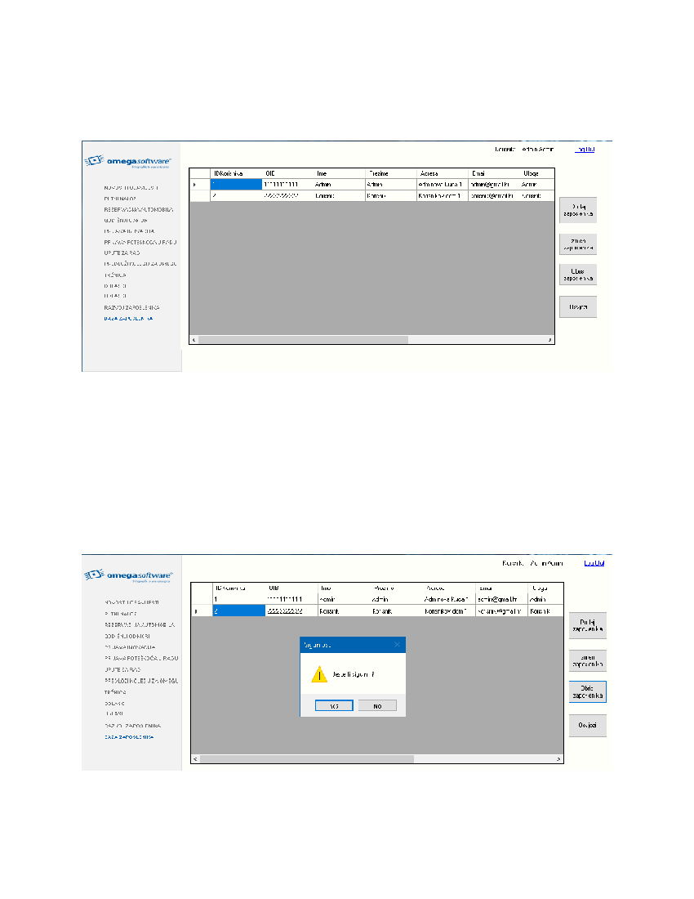

8
4.1.
Brisanje korisnika iz baze
Odabirom retka u tablici zaposlenika, administrator može odabrati korisnika kojeg želi obrisati iz baze.
Slika 10. Tablica zaposlenika
Klikom na IDKorisnika ili bilo gdje drugdje odabiremo redak koji želimo izbrisati iz baze. Kliknimo na drugi
redak IDKorisnika(2), što znaèi da želimo izbrisati Korisnik Korisnik iz baze podataka Klikom na gumb
„Obrisi Zaposlenika“ koji se nalazi na desnoj strani aplikacije odabiremo opciju kojom æemo maknuti
korisnika iz baze podataka Pritiskom na tipku, javlja nam se upit sigurnosti Klikom na „Da“ brišemo
korisnika i dobivamo povratnu informaciju da smo ga izbrisali, pritiskom na „Ne“ odustajemo od namjere
brisanja korisnika.
Slika 11. Upit sigurnosti